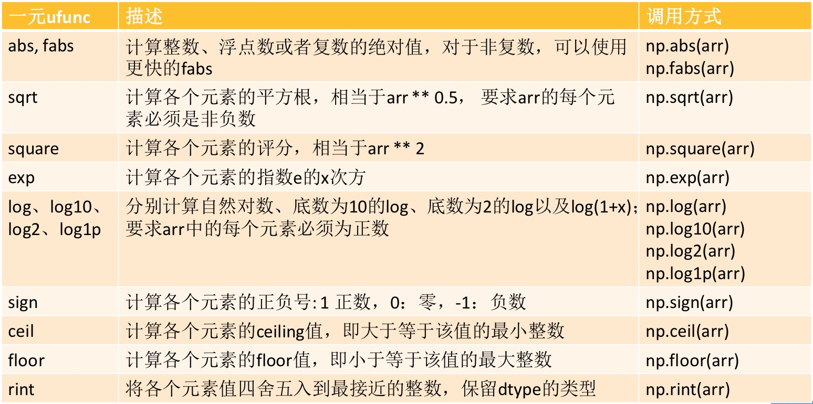
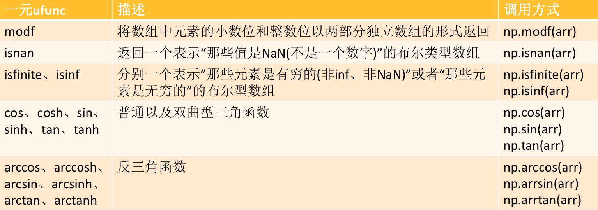
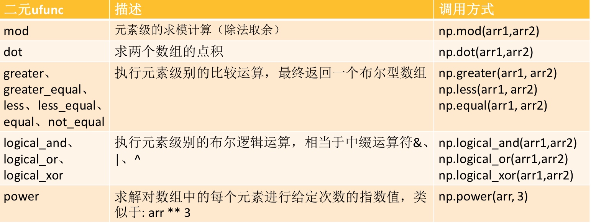

numpy创建ndarray
- 一种由相同元素组成的多维数组,元素数量是事先给定好的
- 元素的数据类型由dtype对象来指定,每个ndarry只有一种dtype类型
- ndarray的大小固定,创建好数组大小是不会再发生改变的
import numpy as np
# 可以用help方法来查看这个函数的使用方法
help(np.array)
用python内置数组创建ndarray
# 用一维数组创建
np.array([1,2,3])
array([1, 2, 3])
# 用元组创建
np.array((1,2,3))
array([1, 2, 3])
# 用多维数组
np.array([[1,2,3,4],
[5,6,7,8]])
array([[1, 2, 3, 4],
[5, 6, 7, 8]])
# 创建三维数组
np.array([[[1,2,3],[2,3,4]],[[4,5,6],[7,8,9]]
])
array([[[1, 2, 3],
[2, 3, 4]],
[[4, 5, 6],
[7, 8, 9]]])
用numpy内置函数创建ndarray
# 通过zeros创建数组,创建元素全为零的数组
# 参数为一个元组,元组表示你想创建一个几维的数组
# 创建一个3*3的数组,元素初始化都为0
np.zeros((3,3))
# 创建一个2*3*3的三维数组,元素初始化都为0
np.zeros((2,3,3))
array([[[0., 0., 0.],
[0., 0., 0.],
[0., 0., 0.]],
[[0., 0., 0.],
[0., 0., 0.],
[0., 0., 0.]]])
# 通过ones创建数组,创意元素都为1的数组
np.ones((3,4))
array([[1., 1., 1., 1.],
[1., 1., 1., 1.],
[1., 1., 1., 1.]])
# 通过empty创建未初始化的数组
np.empty((2,3))
array([[0., 0., 0.],
[0., 0., 0.]])
ndarray的其他创建方式
# arange函数,类似python内置的range
np.arange(9)
array([0, 1, 2, 3, 4, 5, 6, 7, 8])
np.arange(1,9)
array([1, 2, 3, 4, 5, 6, 7, 8])
np.arange(1,9,2)
np.arange(9,1,-1)
array([9, 8, 7, 6, 5, 4, 3, 2])
# linspace函数,生成等差数列
# 生成1到10的数,一共有5个元素
np.linspace(1,10,5)
array([ 1. , 3.25, 5.5 , 7.75, 10. ])
# logspace生成等比数列
# 10的0次方开始,到10的2次方结束,一共生成5个元素
np.logspace(0,2,5)
array([ 1. , 3.16227766, 10. , 31.6227766 ,
100. ])
# 修改base为2,默认底数是10
np.logspace(0,2,5,base=2)
array([1. , 1.41421356, 2. , 2.82842712, 4. ])
# random函数,生成随机数
np.random.random((3,3))
array([[0.32521681, 0.46044314, 0.19938466],
[0.38477235, 0.20250328, 0.93452861],
[0.0615017 , 0.1795197 , 0.32724319]])
# randint 生成随机整数,从1到9,一共是个3*3的数组
np.random.randint(1,9,size=(3,3))
array([[6, 1, 2],
[2, 5, 5],
[6, 7, 3]])
# randn 返回一个样本,具有标准正态分布
np.random.randn(3,3)
array([[-0.57476519, 0.45673427, 0.26634586],
[-1.98015823, -1.25879457, -1.18650781],
[ 0.90624497, -1.16062802, 0.49804173]])
# rand 生成0到1直接的随机数
np.random.rand(9)
array([0.23177845, 0.33177202, 0.72181294, 0.24416673, 0.41005128,
0.6275457 , 0.40247175, 0.90591392, 0.46705692])
ndarray对象属性
修改ndarray对象类型dtype
# ndim 数组维度的个数,轴的个数被称作秩
arr=np.random.randint(1,9,size=(3,3))
print(arr.ndim)
2
# shape 数组的维度
arr=np.random.randint(1,9,size=(3,3))
print(arr.shape)
(3, 3)
# dtype ndarray的元素类型
arr=np.random.randint(1,9,size=(3,3))
print(arr.dtype)
# itemsize数组中每个元素的字节大小
print(arr.itemsize)
# size ndarray里面的元素个数
print(arr.size)
int64
8
9
arr2=np.array([1,2,3,4])
# 查看元素类型
print(arr2.dtype)
# 修改元素类型
arr3=arr2.astype(float)
print(arr3.dtype)
arr4=np.array([1,2,3,4],dtype=float)
print(arr4.dtype)
int64
float64
float64
修改ndarray的形状shape
# 修改ndarray形状,要求修改后乘积不变
arr=np.random.randint(1,9,size=(2,5))
print(arr)
print(arr.shape)
arr.shape=(5,2)
print(arr)
[[5 8 8 1 8]
[5 5 8 5 6]]
(2, 5)
[[5 8]
[8 1]
[8 5]
[5 8]
[5 6]]
arr=np.random.randint(1,9,size=(2,5))
# -1 系统帮你算另外一部分
arr.shape=(5,-1)
arr
array([[2, 8],
[1, 7],
[8, 7],
[3, 7],
[8, 5]])
# reshape修改后,创建的数组和原先的数组映射.修改后就都修改了
arr=np.arange(9)
print(arr)
arr2=arr.reshape(3,3)
print(arr2)
arr2[0][1]=100
print(arr)
print(arr2)
[0 1 2 3 4 5 6 7 8]
[[0 1 2]
[3 4 5]
[6 7 8]]
[ 0 100 2 3 4 5 6 7 8]
[[ 0 100 2]
[ 3 4 5]
[ 6 7 8]]
arr=np.arange(9).reshape(3,3)
arr
array([[0, 1, 2],
[3, 4, 5],
[6, 7, 8]])
numpy的基本操作
数组与标量,数组之间的运算
- 1.数组不用循环即可对每个元素执行批量的算术运算操作,这个过程叫做矢量化,即用数组表达式代替循环的做法
- 2.矢量化数组运算性能比纯Python方式快上一两个数据级
- 3.大小相等的两个数组之间的任何算术运算都会将其运算应用到元素级别的操作上
在numpy中,大小相等的数组之间的的运算,为元素级运算,即只用于位置相同的元素之间,所得的运算结果组成一个新的数组,运算结果的位置跟操作数位置相同
数组与标量之间的运算
arr=np.arange(9).reshape(3,3)
print(arr)
print(arr+2)
print(arr*2)
[[0 1 2]
[3 4 5]
[6 7 8]]
[[ 2 3 4]
[ 5 6 7]
[ 8 9 10]]
[[ 0 2 4]
[ 6 8 10]
[12 14 16]]
数组与数组之间的运算
arr=np.array([1,1,2,3])
arr2=np.array([2,1,6,3])
arr3=arr+arr2
arr3
array([3, 2, 8, 6])
arr1=np.array([
[10,20,30],
[40,50,60]
])
arr2=np.array([
[1,2,3],
[4,5,6]
])
print(arr1)
print(arr2)
[[10 20 30]
[40 50 60]]
[[1 2 3]
[4 5 6]]
print(arr1+arr2)
[[11 22 33]
[44 55 66]]
数组的矩阵积
- 矩阵:多维数组即矩阵
- 矩阵积(matrix product):两个二维矩阵(行和列的矩阵)满足第一个矩阵的列数与第二个矩阵的行数相同,那么可以进行矩阵的乘法,即矩阵积,矩阵积不是元素级的运算.也称为点积,数量积.
- [M,N]*[N,Y]=M,Y
- dot函数来实现
# 每行为每个部门1,2,3,每列为每个产品A,B,C
# 那么就是3个部门,3个产品
arr=np.array([
[120,60,220],
[115,23,201],
[132,48,230]
])
# 每行为产品A,B,C,列为产品单价和产品体积
arr2=np.array([
[12.34,0.04],
[204.56,2.34],
[9.89,0.45]
])
# 求每个部门的总收入,以及每个部门的产品共占了多少体积
# 为了实现这个需求,就可以将两个矩阵进行相乘
# 举例: 120*12+60*204.56+220*9.89=15930.2
# 行列对应元素相乘后累加
# 矩阵相乘使用dot函数
arr.dot(arr2)
array([[15930.2 , 244.2 ],
[ 8111.87, 148.87],
[13722.46, 221.1 ]])
ndarray多维数组的索引和切片
| | 0 | 1 | 2 | 3 |
|:-|:--|:---|:---|:---|
| 0 |0,0|0,1|0,2 |0,3 |
| 1 |1,0|1,1|1,2 |1,3 |
| 2 |2,0|2,1|2,2 |2,3 |
arr=np.random.randint(1,9,size=(2,3,3))
print(arr)
[[[4 5 1]
[3 5 3]
[3 7 5]]
[[8 3 1]
[3 8 3]
[3 1 7]]]
ndarray的索引
和python的列表索引也是一样的
# 一个中括号表示一个维度
print(arr[0][0][1])
# 通过逗号分隔,每部分是一个维度.比用中括号看起来更简单
print(arr[0,0,1])
5
5
ndarray的切片
和python的列表切片也是一样的
# 冒号代表对这一维度的所有进行切片
print(arr[:,:,:])
# 取每一维度的第一列
print(arr[:,:,0])
print(arr[:,:,0:2])
[[[4 5 1]
[3 5 3]
[3 7 5]]
[[8 3 1]
[3 8 3]
[3 1 7]]]
[[4 3 3]
[8 3 3]]
[[[4 5]
[3 5]
[3 7]]
[[8 3]
[3 8]
[3 1]]]
num=np.array([
[0,1,2,3,4],
[5,6,7,8,9]
])
# 取第一行的所有元素
num[1,:]
# 取第一列的所有元素
num[:,0]
# 取第二列的所有元素
num[:,1]
array([1, 6])
ndarray的高级索引
如果一个ndarray是非元组序列,数据类型为整数或布尔值的ndarray,或者至少一个元素为序列对象的元组,我们就能够用它来索引ndarray
高级索引始终返回数据的副本.与此相反,切片只提供了一个视图.
整数索引
x=np.array([
[1,2],
[3,4],
[5,6]
])
y=x[[0,1,2],[0,1,0]]
# 该结果包括数组中(0,0)，(1,1)和(2,0)位置处的元素。
print(y)
[1 4 5]
# 下面的示例获取了 4X3 数组中的每个角处的元素。
# 行索引是[0,0]和[3,3]，而列索引是[0,2]和[0,2]。
x=np.array([
[0,1,2],
[3,4,5],
[6,7,8],
[9,10,11]
])
print('数组原样:')
print(x)
print('~'*30)
rows=np.array([[0,0],[3,3]])
cols=np.array([[0,2],[0,2]])
y=x[rows,cols]
print('这个数组的每个角处的元素是:')
print(y)
数组原样:
[[ 0 1 2]
[ 3 4 5]
[ 6 7 8]
[ 9 10 11]]
~~~~~~~~~~~~~~~~~~~~~~~~~~~~~~
这个数组的每个角处的元素是:
[[ 0 2]
[ 9 11]]
布尔索引
当结果对象是布尔运算(例如比较运算符)的结果时,将使用此类型的高级索引.
过滤空值,挺好.
# 这个例子中，大于 5 的元素会作为布尔索引的结果返回。
x=np.array([
[0,1,2],
[3,4,5],
[6,7,8],
[9,10,11]
])
print(x>5)
print('大于5的元素是:')
print(x[x>5])
[[False False False]
[False False False]
[ True True True]
[ True True True]]
大于5的元素是:
[ 6 7 8 9 10 11]
# 这个例子使用了`~(取补运算符)`来过滤NaN
a=np.array([np.nan,1,2,np.nan,3,4,5])
print(a)
print(a[~np.isnan(a)])
[nan 1. 2. nan 3. 4. 5.]
[1. 2. 3. 4. 5.]
# 从数组中过滤掉非复数元素
a = np.array([1, 2+6j, 5, 3.5+5j])
print(a[np.iscomplex(a)])
[2. +6.j 3.5+5.j]
Numpy-广播
- 广播是指Numpy在算术运算期间处理不同形状的数组的能力.
- 对数组的算术运算通常在相应的元素上进行.
- 如果两个阵列具有完全相同的形状,则这些操作被无缝执行.
# 当两个数组的形状相同,运算没毛病
a=np.array([1,2,3,4])
b=np.array([10,20,30,40])
c=a*b
print(c)
[ 10 40 90 160]
如果两个数组的维数不相同,则元素到元素的操作是不可能的.
然而,在Numpy中仍然可以对形状不相似的数组进行操作,因为它拥有广播功能.
较小的数组会广播到较大数组的大小,以便使它们的形状可兼容.
如果满足一下规则,则可以进行广播:
+ ndim较小的数组会在前面追加一个长度为1的维度.
+ 输出数组的每个维度的大小是输入数组该维度大小的最大值.
未完待续...
NumPy-数组上的迭代
- Numpy包含一个迭代器对象numpy.nditer.
- 她是一个有效的多维迭代器对象,可以用于在数组上进行迭代.
- 数组的每个元素可使用python的标准Iterator接口来访问
迭代方式
a=np.arange(0,60,5).reshape(3,4)
print('--- 原始数组 ---')
print(a)
print('~'*30)
print('--- 进行迭代 ---')
for x in np.nditer(a):
print(x)
--- 原始数组 ---
[[ 0 5 10 15]
[20 25 30 35]
[40 45 50 55]]
~~~~~~~~~~~~~~~~~~~~~~~~~~~~~~
--- 进行迭代 ---
0
5
10
15
20
25
30
35
40
45
50
55
b=a.T
print('--- 原始数组进行转置 ---')
print(b)
for x in np.nditer(b):
print(x,end=' ')
--- 原始数组进行转置 ---
[[ 0 20 40]
[ 5 25 45]
[10 30 50]
[15 35 55]]
0 5 10 15 20 25 30 35 40 45 50 55
迭代顺序
如果相同元素使用 F 风格顺序存储，则迭代器选择以更有效的方式对数组进行迭代。
a=np.arange(0,60,5).reshape(3,4)
print('原始数组')
print(a)
b=a.T
print('原始数组的转置')
print(b)
print('以 C 风格顺序排序')
c=b.copy(order='C')
print(c)
print("以 C 来进行迭代")
for x in np.nditer(c):
print(x,end=' ')
print('以 F 风格顺序排序')
c=b.copy(order='F')
print(c)
print("以 F 来进行迭代")
for x in np.nditer(c):
print(x,end=' ')
原始数组
[[ 0 5 10 15]
[20 25 30 35]
[40 45 50 55]]
原始数组的转置
[[ 0 20 40]
[ 5 25 45]
[10 30 50]
[15 35 55]]
以 C 风格顺序排序
[[ 0 20 40]
[ 5 25 45]
[10 30 50]
[15 35 55]]
以 C 来进行迭代
0 20 40 5 25 45 10 30 50 15 35 55 以 F 风格顺序排序
[[ 0 20 40]
[ 5 25 45]
[10 30 50]
[15 35 55]]
以 F 来进行迭代
0 5 10 15 20 25 30 35 40 45 50 55
# 可以通过显示提醒,来强制nditer对象使用某种顺序
a=np.arange(0,60,5).reshape(3,4)
print("以 C 来进行迭代:")
for x in np.nditer(a,order='C'):
print(x,end=' ')
print('\n'+'~'*40)
print("以 F 来进行迭代:")
for x in np.nditer(a,order='F'):
print(x,end=' ')
以 C 来进行迭代:
0 5 10 15 20 25 30 35 40 45 50 55
~~~~~~~~~~~~~~~~~~~~~~~~~~~~~~~~~~~~~~~~
以 F 来进行迭代:
0 20 40 5 25 45 10 30 50 15 35 55
迭代器修改数组的值
- nditer对象有另一个可选参数
op_flags.其默认值为只读. - 但可以设置为读写或只写模式.
- 这将允许使用此迭代器修改数组的元素
a=np.arange(0,60,5).reshape(3,4)
print("原始数组:")
print(a)
for x in np.nditer(a,op_flags=['readwrite']):
x[...]=2*x
print('修改后的数组是:')
print(a)
原始数组:
[[ 0 5 10 15]
[20 25 30 35]
[40 45 50 55]]
修改后的数组是:
[[ 0 10 20 30]
[ 40 50 60 70]
[ 80 90 100 110]]
迭代器外部循环
nditer类的构造器拥有flags参数
# 迭代器遍历每列的一维数组
print(a)
print("~"*50)
for x in np.nditer(a,flags=['external_loop'],order='F'):
print(x,end=' ')
[[ 0 10 20 30]
[ 40 50 60 70]
[ 80 90 100 110]]
~~~~~~~~~~~~~~~~~~~~~~~~~~~~~~~~~~~~~~~~~~~~~~~~~~
[ 0 40 80] [10 50 90] [ 20 60 100] [ 30 70 110]
ndarray-数组拉伸与合并
- 数组拉伸np.tile（A，rep）函数可以将数组A进行拉伸，沿着A的维度重复rep次
- 对于ndarray数组而言，多个数组可以执行合并操作，合并的方式有多种。
- Stack(arrays,axis=0):沿着新的轴加入一系列数组
- vstack（）：堆栈数组垂直顺序（行）
- hstack（）：堆栈数组水平顺序（列）
arr=np.array([[3,9],[1,2]])
arr
array([[3, 9],
[1, 2]])
# 横向拉伸2次
np.tile(arr,2)
array([[3, 9, 3, 9],
[1, 2, 1, 2]])
np.tile(arr,6)
array([[3, 9, 3, 9, 3, 9, 3, 9, 3, 9, 3, 9],
[1, 2, 1, 2, 1, 2, 1, 2, 1, 2, 1, 2]])
np.tile(arr,(3,1))
array([[3, 9],
[1, 2],
[3, 9],
[1, 2],
[3, 9],
[1, 2]])
np.tile(arr,(3,4))
array([[3, 9, 3, 9, 3, 9, 3, 9],
[1, 2, 1, 2, 1, 2, 1, 2],
[3, 9, 3, 9, 3, 9, 3, 9],
[1, 2, 1, 2, 1, 2, 1, 2],
[3, 9, 3, 9, 3, 9, 3, 9],
[1, 2, 1, 2, 1, 2, 1, 2]])
stack
Stack(arrays,axis=0):沿着新的轴加入一系列数组
相当于加一层维度
a=[1,2,3]
b=[4,5,6]
# 默认axis=0
np.stack((a,))
array([[1, 2, 3]])
np.stack((a,b))
array([[1, 2, 3],
[4, 5, 6]])
np.stack((a,),axis=1)
array([[1],
[2],
[3]])
常用一元函数


arr=np.array([-1,2,-3])
arr
array([-1, 2, -3])
# 取绝对值
np.abs(arr)
array([1, 2, 3])
# 计算各个元素的正负号
np.sign(arr)
array([-1, 1, -1])
# 向上取整
np.ceil([1.2,1.4,1.7])
array([ 2., 2., 2.])
# 向下取整
np.floor([1.2,1.3,1.6])
array([ 1., 1., 1.])
# 四舍五入取整
np.rint([1.2,1.3,1.6])
array([ 1., 1., 2.])
# 分别返回一个数的小数部分和整数部分
np.modf([1.2,7.8])
(array([ 0.2, 0.8]), array([ 1., 7.]))
常用二元函数

# 元素级的求模计算(除法取余)
np.mod(4,3) # 1
np.mod([4,8],[3,5]) # [1,3]
array([1, 3])
聚合函数
- 求和:np.sum()
- 平均值:np.mean
- 最大值:np.max
- 最小值:np.min
- 总体标准差:np.std
- ......
arr.sum()
-2
where
arr1=np.array(
[
[1,2,np.NaN],
[4,5,np.NaN]
])
arr1
array([[ 1., 2., nan],
[ 4., 5., nan]])
condition=np.isnan(arr1)
np.where(condition,0,arr1)
array([[ 1., 2., 0.],
[ 4., 5., 0.]])
unique
np.unique([1,2,3,3,3,3,4,5,6,6,6,6])
array([1, 2, 3, 4, 5, 6])